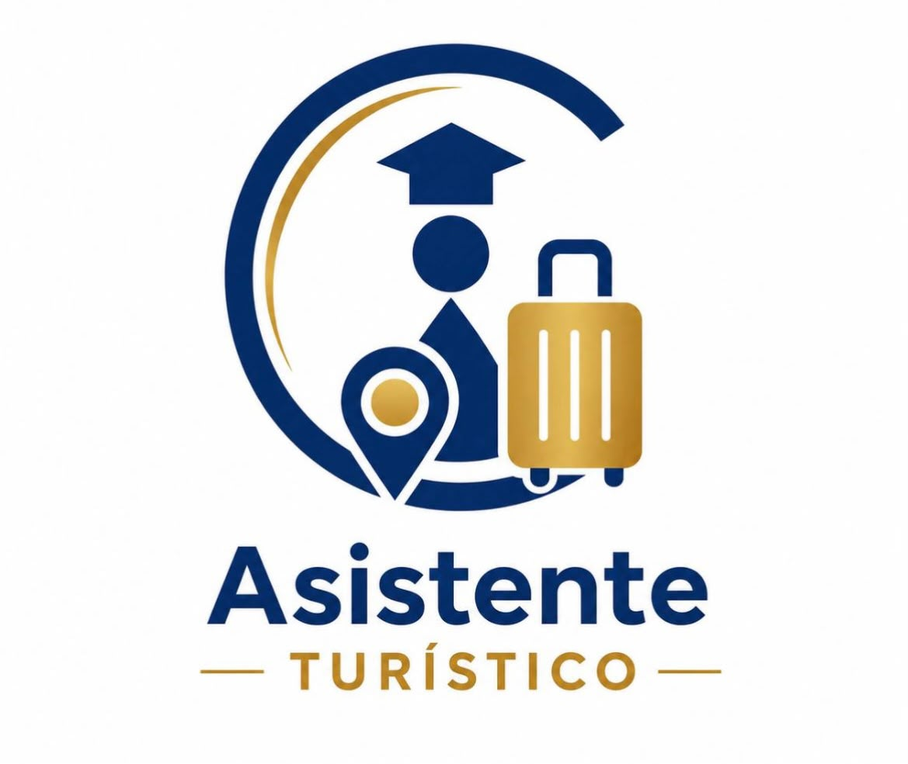

Instituto del Centro
Curso de Asistente Turístico

Capacitación dictada por Instituto del Centro.
Al finalizar y aprobar el curso, el alumno recibe un
Certificado de Aprobación emitido y avalado por Instituto Ferrer.
Este curso brinda los conocimientos necesarios para desempeñarte en agencias de viajes, empresas de turismo, hoteles y organizaciones relacionadas con la actividad turística. Aprenderás atención al cliente, planificación de itinerarios, organización de servicios turísticos y herramientas para brindar una atención profesional.
Características del curso
- Duración: 2 meses.
- Modalidad 100% online.
- Clases en vivo por Zoom.
- Material de estudio digital.
- Acompañamiento docente.
- Evaluación final.
- Precio: $35.000 por mes.
- Sin costo de inscripción ni examen.
¿Qué aprenderás?
- Introducción al turismo.
- Atención y asesoramiento al cliente.
- Organización de viajes e itinerarios.
- Reservas y documentación.
- Protocolos de atención.
- Comunicación efectiva.
- Trabajo en agencias de turismo.
¿A quién está dirigido?
Está destinado a personas que desean iniciarse en el sector turístico, estudiantes, emprendedores y trabajadores que buscan ampliar sus oportunidades laborales mediante una formación práctica y accesible.
Salida laboral
La capacitación permite desarrollar conocimientos para desempeñarse como asistente en agencias de viajes, empresas de turismo, hoteles, complejos turísticos, organismos públicos y emprendimientos relacionados con el turismo.
Modalidad online • Cupos limitados
Inscribite acá